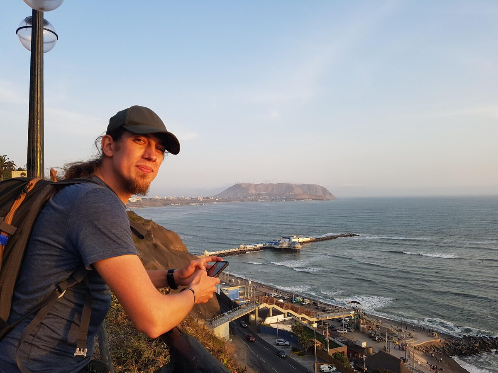

Welcome to my portfolio. Here you will find spatial projects blending technology and terrain.
View my projectsAs an experienced forest surveyor and GIS specialist, I combine traditional forestry knowledge with modern spatial technologies. I have over 10 years of practical experience in forest inventories, spatial data processing, and remote sensing.
My education in Forest Management, complemented by postgraduate studies in Geographic Information Systems (UNIGIS), has equipped me with theoretical knowledge and practical skills to solve complex spatial problems.
I am passionate about innovative solutions that leverage technology to better understand and manage our natural resources.
My interests include developing GIS tools, forest ecosystems, and motorcycle adventures off the beaten path.

Geospatial data analyst and forest engineer with over 10 years of experience in forestry, spatial data analysis and remote sensing. Focus on LiDAR point cloud processing, satellite imagery analysis, automated Python workflows and GIS-based forest management.
10+ years of experience in forestry, spatial analysis and remote sensing
GIS Technologist & Forest Assessor
Processing and validating large geospatial datasets for digital forest maps, management models and district plans; GIS solutions based on orthophotos and satellite imagery; quality control of forestry field data.
Landscape & Garden Design Technician
Urban garden layouts and green area maintenance.
Geospatial Data Analyst & Forest Assessor
Automated LiDAR point cloud filtering and classification to generate DTM/DSM; forest road network design in ArcMap and QGIS; geodata quality management and maps for the National Forest Inventory, Biostrateg and Monitoring Beskidy.
Forest Management Specialist / Assessor
Field work on full and simplified forest inventories and spatial data collection.
Green Space Development Specialist
Planning and arranging urban and rural green areas.
Graduate Forestry Intern
Forest administration, silviculture, timber harvesting and logistics.
Postgraduate studies – Geomatics and Artificial Intelligence in Forestry
Postgraduate diploma – UNIGIS Geographic Information Systems
Engineer in Forestry (Forest Management)
Certified Forest Technician
Advanced GIS and remote sensing analysis of forest dynamics between 2015-2019.
View details →Population estimation in areas at risk of flooding due to sea level rise.
View details →A network analysis showing the bicycle travel range to main railway stations in Wrocław within 5, 10, and 15 minutes.
View details →Sentinel-2 and Google Earth Engine burn severity mapping of the 2022 wildfire in Bohemian Switzerland National Park.
View details →Work-in-progress Python tool for detecting and segmenting trees in terrestrial LiDAR scans and measuring DBH, height and volume.
View details →karol.pietruszka88@gmail.com
+43 681 811 300 13
Vienna, Austria